Einleitung
Zweck
Dieses Dokument stellt das Handbuch der "vHike" dar. Es soll Benutzern bei der Verwendung der vHike unterstützen. Auf eine gute Verständlichkeit wird Wert gelegt.
Leserkreis
Das Handbuch richtet sich an folgende Lesergruppen:
- den App-Benutzern
- dem Kunden
- den Betreuern des Studienprojekts
Konventionen
In diesem Dokument werden mehrere Konventionen verwendet, um knapp, übersichtlich, lesbar und treffend zu sein:
- Für Überbegriffe wie Benutzer oder Entwickler wird das generische Maskulinum verwendet. Da die Deutsche Sprache hier keine zufrieden stellende Alternative kennt, sind damit selbstverständlich auch alle weiblichen Leserinnen angesprochen.
- In diesem Dokument wird die deutsche Sprache verwendet; dabei ist allerdings zu beachten, dass sich übernommene oder übersetzte Begriffe aus dem Englischen nicht vermeiden lassen. Diese werden dann jedoch grammatikalisch an die Deutsche Sprache angepasst.
- Ein Verweis in diesem Dokument auf andere Kapitel wird so dargestellt:
Grundbegriffe
Dieser Abschnitt erläutert einige Grundbegriffe die im Kontext der vHike verwendet werden.
Fahrer & Mitfahrer
Benutzer die Fahrten anbieten werden als Fahrer bezeichnet. Mitfahrer dagegen, nehmen an Fahrten teil, wobei hier auch potentielle Mitfahrer als Mitfahrer angesehen werden.
Ressourcengruppe
Jede Ressource definiert mehrere so genannte Privacy Settings. Diesen können verschiedene Werte zugewiesen werden (etwa erlauben oder nicht). Abhängig vom gesetzten Wert ist ein Zugriff auf eine Funktion der Ressource möglich (ist etwa des Privacy Setting "Datei lesen" gesetzt, das Setting "Datei schreiben" jedoch nicht, so erlaubt die Ressource "Dateisystem" nur das Auslesen einer Datei, nicht jedoch das Schreiben in eine Datei).
Service Features
Jede PMP-Applikation, wie zum Beispiel vHike, legt fest, welche Funktionen bestimmter Ressourcen sie benötigt und welche Dienste sie hierfür dem Benutzer anbietet. Diese Vereinbarung wird als Service Feature bezeichnet. Eine Applikation besitzt in der Regel mehrere Service Features. Die Ressourcengrouppen und Service Features von vHike werden in Kapitel behandelt.
Im Detail legt jedes Service Feature fest, welche Ressourcen, und welche Funktionen dieser Ressource, benötigt werden. Im Gegenzug bietet die Applikation dem Anwender für den Zugriff auf diese Ressource bzw. dieser Funktion bestimmte Funktionalitäten an.
Es können bei Bedarf mehrere Service Features gleichzeitig aktiviert werden, wodurch der Funktionsumfang der Applikation erweitert werden kann.
Systemanforderungen
Um vHike installieren und ausführen zu können, muss auf dem Zielgerät mindestens Android in der Version 2.1.1 installiert sein. Auch notwending ist die Verwendung von PMP - Privacy Management Platform. Weitere Anforderungen sind ein Zielgerät mit Internet-Zugang, Bluetooth und GPS. In der Beschreibung der jeweiligen Ressourcen finden Sie in der Regel Informationen über deren Systemanforderungen.
Allgemeines
Dieser Abschnitt richtet sich an die Benutzer der vHike.
Installation
vHike wird wie eine gewöhnliche Android-Applikation installiert. Hierzu wird entweder die apk-Datei der vHike-Anwendung auf das Gerät übertragen, oder vHike wird aus dem Android Market ausgewählt. Folgen Sie anschließend bitte den Anweisungen des Android-Betriebssystems.
Sprache
Die Beschriftung der Elemente der Benutzeroberfläche erfolgt durchgängig in Englisch. Andere Sprachen werden momentan nicht unterstützt.
Da, wie bereits erwähnt, die Standard-Beschriftung auf Englisch erfolgt, wird auch in den Bildschirmfotos und bei der Benennung der Schaltflächen in den folgenden Abschnitten die englische Variante verwendet.
Funktionen
vHike - Standard/Bluetooth
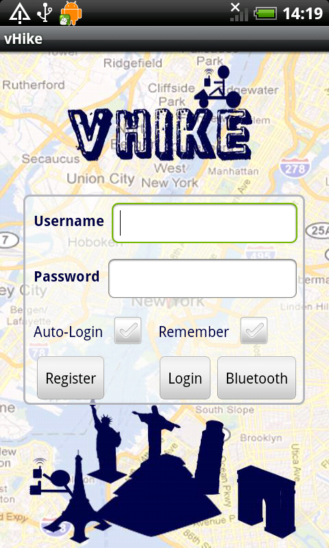{kind=link}
Ausgangspunkt der Verwendung von vHike bildet das Login-Menü, dass sich beim Starten der Anwendung öffnet. vHike bietet zwei Varianten der Verwendung an. Die Standard-Funktion (siehe ) und die Bluetooth-Variante (siehe ). Über das Login-Menü kann zwischen diesen beiden Varianten ausgewählt werden.
vHike - Standard
Registrieren
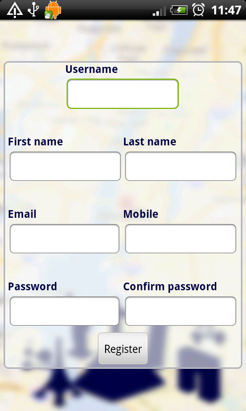{kind=link}
Um sich erfolgreich registrieren sind folgende Felder auszufüllen:
- Benutzername
- Vorname
- Nachname
- Email-Adresse
- Handynummer
- Passwort
Einloggen
Für die Standard-Funktion ist eine Registrierung (siehe ) erforderlich. Nach erfolgreicher Registrierung kann man sich über den Benutzernamen und Passwort einloggen. Beim Anhaken des "Auto-Login" Kästchens, wird beim Neustarten von vHike Benutzername und Passwort gemerkt und automatisch eingeloggt. Wird dagegen das "Remember"-Kästchen angehakt werden Benutzername und Passwort gemerkt, jedoch nicht automatisch eingeloggt.
Bei fehlerhaftem Benutzernamen oder Passwort wird der Benutzer entsprechend benachrichtigt.
Hauptmenü
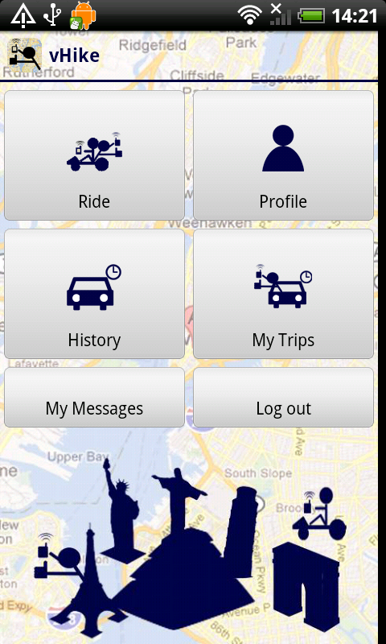{kind=link}
Über das Hauptmenü der Standard-Variante kann durch alle Features von vHike navigiert werden. Man kann Hitchhiken bzw. ein Mitfahrgelegenheit anlegen (siehe ), sein eigenes Profile ansehen (siehe ), seine vergangenen Fahrten ansehen (siehe ) und anstehende bzw. vorausgeplante Fahrten ansehen (siehe ).
Auch das Ausloggen erfolgt aus dem Hauptmenü heraus.
Hitchhike / Mitfahrgelegenheit
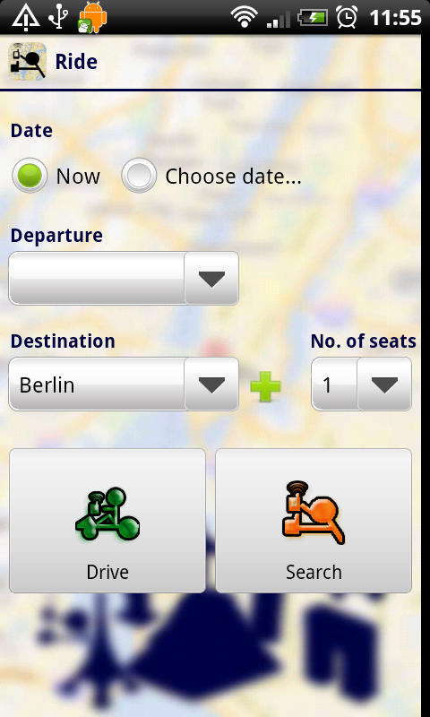{kind=link}
In diesem Menü wird zwischen Hitchhiken und Mitfahrgelegenheit unterschieden. Beim Hitchhiken wird sofort eine Fahrt gestartet und während der Fahrt nach potentiellen Mitfahrern gesucht (mehr ). Dazu wählt man beim "Date" die Möglichkeit "Now" aus, drückt auf "Drive" und wird auf eine Karte weitergeleitet. Plant man jedoch in naher Zukunft eine Fahrt, kann man dies über "Choose date" tätigen. Es muss nun Datum und Uhrzeit festgelegt werden, dazu muss ein Startpunkt ("Departure") festgelegt werden, drückt auf "Create trip" und wird auf weitergeleitet. Für beide Varianten müssen zudem noch Ziel ("Destination") und Anzahl der Sitze ("No. of seats") ausgewählt werden.
Will man sofort nach Fahrten suchen muss Ziel und Anzahl der benötigten Sitze ausgewählt werden und drückt auf "Search" und wird auf eine Karte weitergeleitet (siehe ).
Eigenes Profil anzeigen
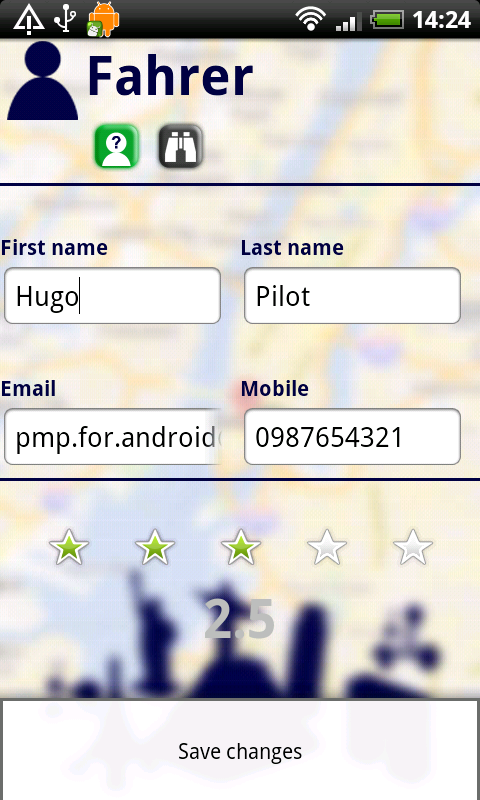{kind=link}
Im Profil werden sämtliche Informationen von einem Benutzer angezeigt. Darunter sind:
- Benutzername
- Vorname
- Nachname
- Emailadresse
- Telefonnummer
- Durchschnittliche Bewertung
Weiterhin kann man hier über den Button neben "Anonymes Profil" den Observationsmodus einschalten (dazu mehr ).
History

My Trips
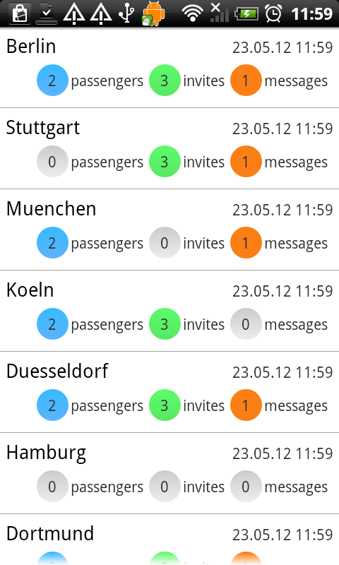{kind=link}
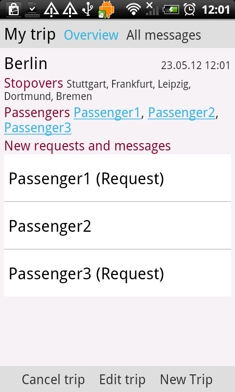
{kind=link}
My messages
Hitchhiken
Ein Fahrer wird durch ein grünes Icon, ein Mitfahrer über ein orangenes Icon gekennzeichnet. Links oben befinden sich Buttons, um aus der rein bzw. raus zu zoomen. Unten befindet sich eine Liste, die sich rauf und runter ziehen lässt. Wird ein passendern Mitfahrer mit gleichem Ziel, zu vielen benötigten Sitzen und innerhalb eines Radius von 5 km gefunden, öffnet sich diese Liste automatisch. Folgende Funktionen sind über folgende Buttons nun möglich:
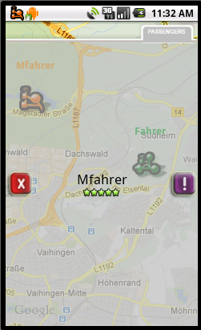 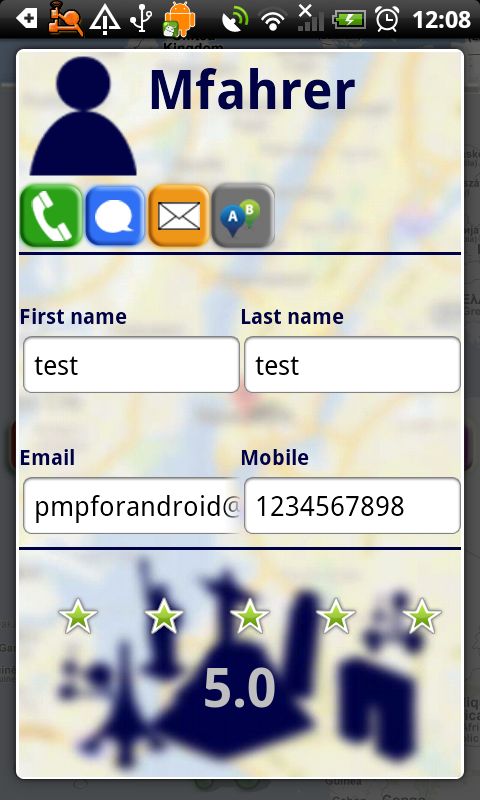{kind=link}
{kind=link}
{kind=link}
{kind=link}
{kind=link}
{kind=link}
{kind=link}
Sobald ein Mitfahrer gefunden wurde, wird in der Statusleiste eine vHike-Meldung geworfen und benachrichtigt den Benutzer mit einem Ton. Wird auf den Namen des gefundenen Mitfahrer gedrückt öffnet sich sein Profil. Je nach dem ob ein Mitfahrer seinen Vornamen, Nachnamen, Emailadresse und Telefonnummer versteckt hat (siehe ), werden entweder diese Daten angezeigt oder nur mit "xxx" versehen. Die Bewertung des Benutzers werden immer angezeigt.
Aus diesem Profil lässt sich, falls er nicht "Anonym" (siehe ) unterwegs ist, mit dem Benutzer kommunizieren. Mehr dazu im Kapitel .
Fahrt suchen
Die Oberfläche und Funktionen vom Mitfahrer bzw. eine "Fahrt suchen" unterscheidet sich nur ein wenig von der Benutzung eines Fahrers. Wurde innerhalb eines Radius von 5 km eine Einladung eines Fahrers empfangen, wird dieser mit einer Liste und über die Status benachrichtigt. Jedeglich die Funktionalität der Buttons ändert sich:
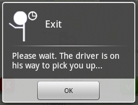{kind=link}
| Icon | Beschreibung |
| Einladung ablehnen. Eine Einladung dieses Fahrers kann erst nach Beenden von "Fahrt suchen" wieder erhalten werden. | |
| Es wurde eine Einladung empfangen. | |
| Einladung wurde angenommen. |
Wurde die Einladung erfolgreich angenommen, erscheint ein Dialog. Wird dieses Dialog bestätigt ist die Suche damit beendet.
Kommunikations-Dialog
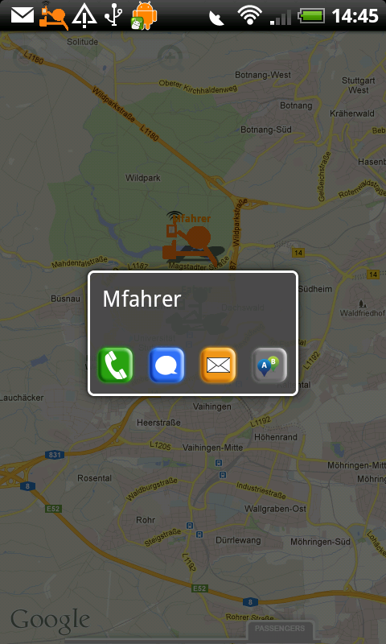{kind=link}
Wird auf einen gefundenen Benutzer gedrückt öffnet sich das "Kommunikations-Dialog". Über dieses Dialog lässt sich mit anderen Benutzern kommunizieren. Die Kommunikation findet entweder über einen Anruf, SMS oder Email ermöglicht. Dazu ist die "Contact/Kommunikation-Ressourcengruppe" notwendig.
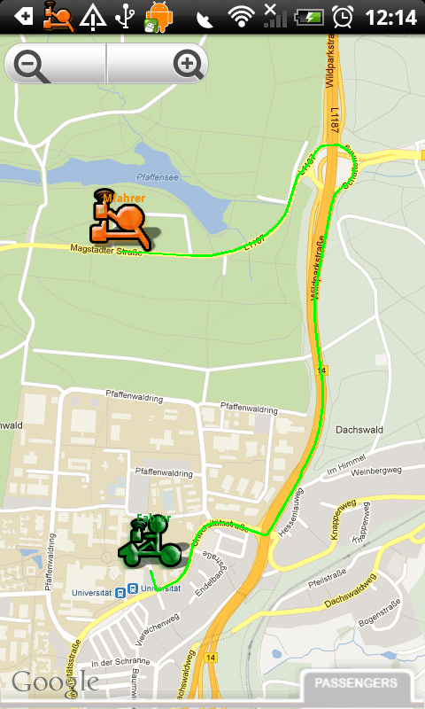{kind=link}
{kind=link}
{kind=link}
{kind=link}
{kind=link}
{kind=link}
Voraussetzung für eine erfolgreiche Kommunikation neben der Installation der "Contact/Kommunikations-RG" ist die Sichtbarkeit der Kontaktdaten eines Benutzers (siehe ).
Unabhängig von der "Contact/Kommunikations-RG" oder die Sichtbarkeit des Profils eines Benutzers, kann eine Route eingezeichnet werden (Rechter Button). Das Einzeichnen mehrerer Routen wird hier nicht unterstützt. Sobald eine Route eingezeichnet wurde, erscheint oben rechts ein Info-Icon und der Button färbt sich lila. Wird auf dieses gedrückt werden Informationen zur Route angezeigt. Darunter sind der Startpunkt (Mein Standort), Ziel (Standort des Benutzers), Distanz (in km) und die geschätzte Zeit bis zum gefundenen Mitfahrer. Zum Entfernen der aktuellen Route kann auf einen anderen Benutzer oder auf den "Route einzeichnen"-Button im Kommunikations-Dialog gedrückt werden.
Observationsmodus / Anonymes Profil
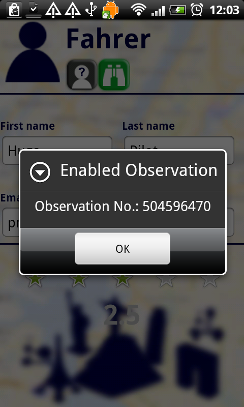{kind=link}
{kind=link}
{kind=link}
{kind=link}
{kind=link}
vHike - Bluetooth
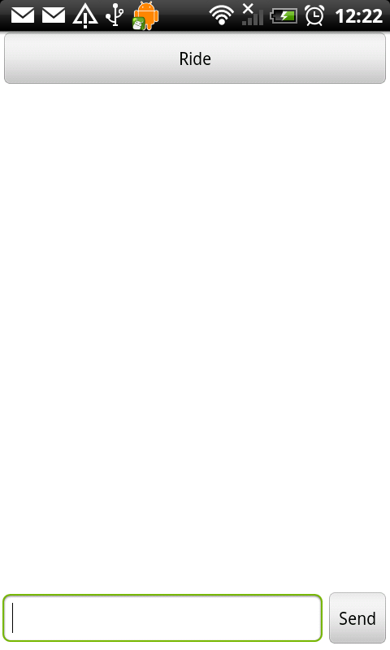{kind=link}
Um die Bluetooth-Variante der Applikation "vHike" benutzen zu können, brauchen Sie ein Gerät mit integriertem Bluetooth. Bluetooth-Variante ist weniger komplizierter gehalten, als die Standart-Variante der Applikation "vHike", da diese Funktionen, wie die Google-Kartenansicht nicht unterstützt und hier nur auf das schnelle Suchen/Anbieten der Fahrten Wert gelegt wird. Die Reichweite von Bluetooth ist vom Gerät abhängig. Die Schaltfläche "Ride" bringt Sie in eine weitere Ansicht von der Bluetooth-Variante
Beachten:Da nicht alle Geräte automatisches Pairing Anbieten ist das Standartpasswort immer : 84459 = vHike
Vor jeder Inbetriebnahme der Bluetooth-Variante müssen unnötige Geräte entkoppelt(unpair) werden. Dies hängt damit zusammen, falls eine Fahrt stattgefunden hat und sich zwei Geräte gepaart haben, dann können diese über vHike nicht erneut gepaart und somit verbunden werden.
Bluetooth Fahrt anbieten/suchen
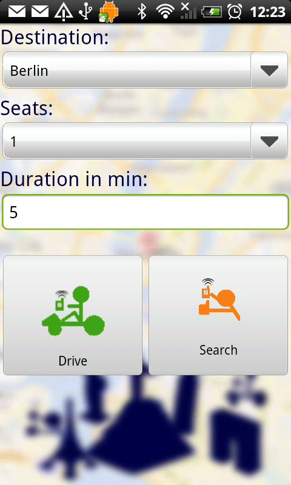{kind=link}
Diese Ansicht erinert an die Standart-Variante. Hier kann das Ziel, Anzahl der Sitze und wie lange das Suchen "Search" bzw. das Anbieten "Drive" der Fahrt dauert. Sobald eine Fahrt gefunden wurde, wird diese in einem Dialog angezeigt und man kann sich sofort mit dem Fahrer verbinden. Solange wartet der Fahrer auf eingehende Anfragen. Nach erfolgreichem Paaren der Geräte wird ein Chat geöffnet . Sobald eine Verbindung getrennt wird bekommet der Benutzer im Chat Verlauf eine Nachricht mit "Connection Lost!"
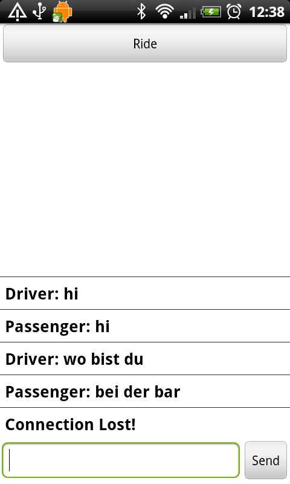 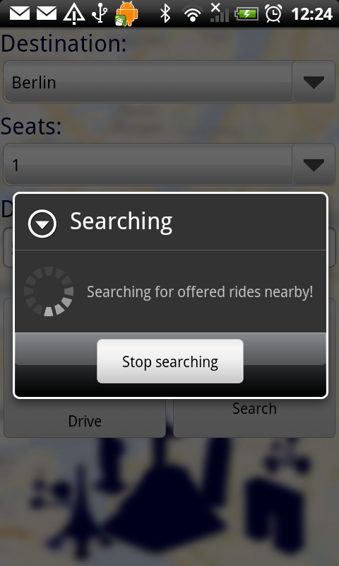 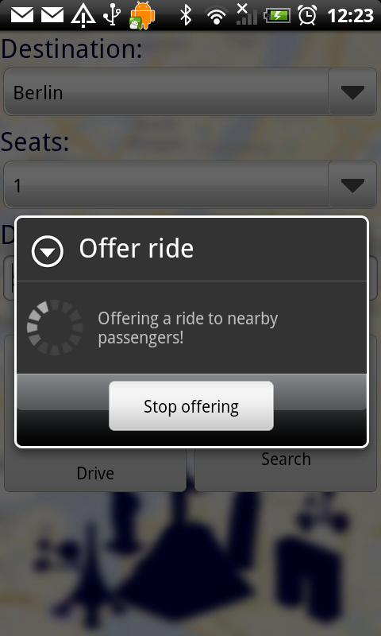{kind=link}
{kind=link}
{kind=link}
Ressourcengruppen
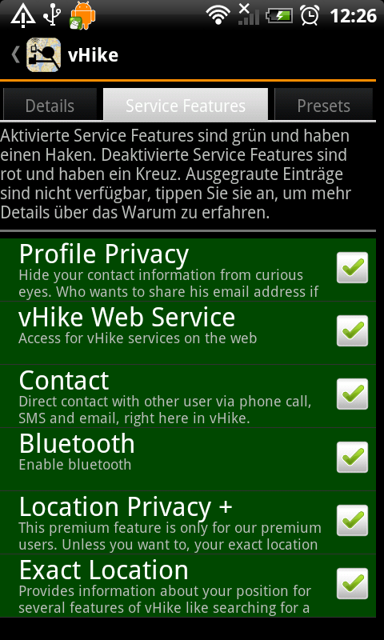 vHike verwendet vier Ressourcengruppen, deren Funktion und Service Features in den folgenden Kapiteln näher erläutert werden.{kind=link}
vHikeWS -RG
Hinter der vHikeWS -Ressourcengruppe steckt die ganze Kommunikation zwischen Fahrer und Mitfahrer. Diese Ressourcengruppe wird benötigt, um den vHike-Standard Modus zu benutzen. Diese Ressourcengruppe ist nicht für vHike -Bluetooth notwendig.
Service Features
vHike Web Service
Enthält alle Funktionen die für den Standard-Modus notwendig sind.
Profile Privacy
Aktivieren, um Profil vor anderen Benutzern zu verbergen.
Location -RG
Die Location -Ressourcengruppe kümmert sich um die Standort-Bestimmung im vHike -Standard-Modus. Diese Resource beinhaltet zwei Service Features.
Service Features
Absolute Location
Mithilfe dieser Ressource kann der Standpunkt ermittelt werden.
Exact Location
Aktivieren dieses Service Features erlaubt exakte Daten eines Standpunktes, wie Land, Stadt und Straße.
Bluetooth -RG
Service Features
Kommunikation/Contact -RG
Um mit anderen Benutzern kommunizieren zu können, wird diese Ressource benötigt. Die Kommunikation erfolgt über Telefon, SMS oder Email. Diese Ressourcengruppe ist nicht zwingend notwendig.
Service Features
Dieses Service Feature kann entweder an oder ausgeschaltet werden.Versionshistorie
Version 0.1 (22.05.2012)
- Initiales Gerüst von PMP Handbuch
Version 0.2 (26.05.2012)
- Um sämtliche Kapitel erweitert.
- Screenshots hinzugefügt.